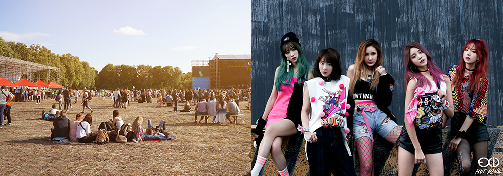
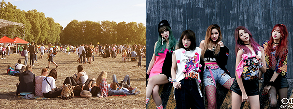

와 제 롤모델이 잡스에요!!! 아이폰 첫 출시되고 나서부터 계속 아이폰 쓰고 있는데 잡스가 너무 그리워요ㅠㅠ 지금은 돈만 벌려고 하는 것 같아서 디자인 발전도 없고ㅠㅠ와 제 롤모델이 잡스에요!!! 아이폰 첫 출시되고 나서부터 계속 아이폰 쓰고 있는데 잡스가 너무 그리워요ㅠㅠ 지금은 돈만 벌려고 하는 것 같아서 디자인 발전도 없고ㅠㅠ와 제 롤모델이 잡스에요!!! 아이폰 첫 출시되고 나서부터 계속 아이폰 쓰고 있는데 잡스가 너무 그리워요ㅠㅠ 지금은 돈만 벌려고 하는 것 같아서 디자인 발전도 없고ㅠㅠ와 제 롤모델이 잡스에요!!! 아이폰 첫 출시되고 나서부터 계속 아이폰 쓰고 있는데 잡스가 너무 그리워요ㅠㅠ 지금은 돈만 벌려고 하는 것 같아서 디자인 발전도 없고ㅠㅠ와 제 롤모델이 잡스에요!!! 아이폰 첫 출시되고 나서부터 계속 아이폰 쓰고 있는데 잡스가 너무 그리워요ㅠㅠ 지금은 돈만 벌려고 하는 것 같아서 디자인 발전도 없고ㅠㅠ
Cultural Odyssey
Music Festivals Set to Light up 2018 Summer Nights

By Tim Alper(Journalist)
We may like to think of summer music festivals as a recent phenomenon, but the tradition of celebrating the hottest months of the year outside with songs and dancing – making the most of the long, balmy summer nights – actually goes back to ancient times.
Europeans of the past would celebrate Midsummer – the longest day of the year – with bonfires and wild dancing. The ancient Celts are believed to have played music and danced around burning wicker effigies of winter at a celebration called Beltane in the early summer months, to celebrate the “death of the cold,” ushering in warmer weather. The Ancient Egyptians, meanwhile, would celebrate the annual summer floods in the Nile Valley with feasts, songs and dancing.
In recent years, it seems that much of the world is now attempting to return to its prehistoric roots – getting out to enjoy fun underneath the summer night skies.
Plethora of Choice
When I was growing up, in Reading, in the south of England, there were only two major annual British music festivals: of which the Reading Rock Festival (now the Reading Festival) was one. I remember watching in awe as a farmer’s field near the riverside, usually home to a few lonely, grazing cows, filled up with stages, speakers the size of small houses and the tents of hordes of music fans from all over Europe. Attendees would camp here to enjoy three days of almost non-stop festivities. At night the music was so loud that you could hear it in villages and towns over 10km away.
Nowadays, you do not need to travel too far to find a music festival as big as the Reading Festival was in the early 1990s – in fact, chances are you will find an even bigger event happening near you this year.
Music festivals used to be a rarity in East Asia. When I first came to Korea 12 years ago, there were only one or two notable events. Now there are dozens, and they are getting bigger! Rock fans, for example, will flock to Incheon in July for Pentaport, with international names like Nine Inch Nails and My Bloody Valentine playing, as well as sets from exciting domestic talent such as The Koxx and Sunwoo JungA.
And if K-pop is more your thing, a galaxy of stars will be taking to the stage at the 2018 Korea Music Festival in August, with the likes of SHINee, Wanna One, EXID and Twice performing.
 Unique Vibes
With so many festivals taking place all over the world, you can afford to pick and choose in summer 2018 – and go hunting for a gathering that provides a once-in-a-lifetime experience. One of the most unique festivals taking place this year is the Sounds of the Dolomites, a high-altitude classical music festival in Trentino, Italy. The festival brings together musicians from all around the world to perform in perhaps the most natural amphitheater on Earth: the slopes of the Dolomite Mountains. Festival-goers gather on the grassy hills to watch as musicians perform unplugged, standing among the bellflowers, orchids and wild sage.
Meanwhile, on the other side of the Atlantic, Burning Man takes place in late August – a surreal and spectacular festival of sustainable art, music, technology and architecture held on the hot sands of the Nevada desert. The gathering brings together some of the most creative minds in North America, and most of Silicon Valley’s leading lights are regular patrons.
There are also large-scale jazz, comedy, sports, drama and even book festivals on offer in major cities around the world in July and August. So no matter what floats your boat, there is no excuse for missing out on the excitement as summer 2018 gets into full swing!


By Tim Alper(Journalist)
Tim Alper is a British journalist who has lived in Seoul for 11 years. He has contributed to publications such as The Guardian, The Jewish Chronicle, Joongang Ilbo, Weekly Chosun and Korean Air’s Morning Calm. He is also the author of the book Bananas & Couscous and the co-author of Have Fork, Will Travel.
-
Great
322
-
Like
322
-
Sad
322
-
So-so
322
-
Angry
322